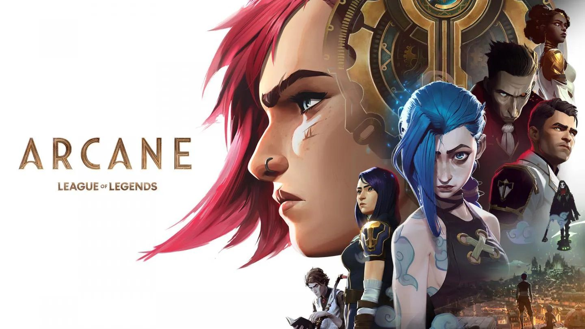

Arcane es una serie de televisión animada francoestadounidense de aventuras, drama y comedia, ambientada en el universo de League of Legends. La serie fue anunciada durante las celebraciones del décimo aniversario de League of Legends. Será desarrollada y producida por Riot Games, con servicios de animación del estudio francés Fortiche Productions. Originalmente programada para un lanzamiento en 2020, la serie se reprogramó para un lanzamiento en 2021 debido a la pandemia de COVID-19. La serie se estrenó finalmente a nivel mundial el 6 de noviembre de 2021 tanto en la plataforma de de vídeo de Netflix como en Tencent Video en China. La serie se verá dividida en 3 "actos" de 3 episodios cada uno, lanzados durante 3 semanas consecutiva.
